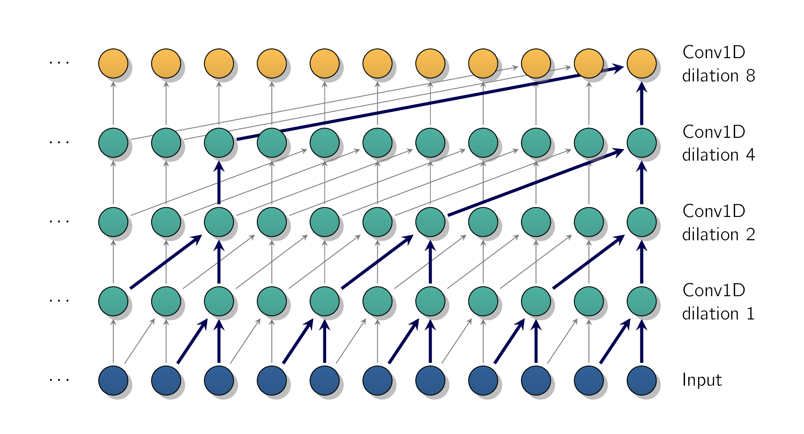

To train an RNNRecurrent Neural Networksa type of ANN designed to process sequential data, such as text, speech, or time series, by passing information through loops from one step to the next on long sequences, we must run it over multiple time steps, making the unrolled RNNRecurrent Neural Networksa type of ANN designed to process sequential data, such as text, speech, or time series, by passing information through loops from one step to the next a very deep network. Just like any DNNDeep Neural NetworksDeep Neural Networks, it may suffer from the unstable gradients problem, discussed in Training Deep Neural Networks: it may take forever to train, or training may be unstable. In addition, when an RNNRecurrent Neural Networksa type of ANN designed to process sequential data, such as text, speech, or time series, by passing information through loops from one step to the next processes a long sequence, it will gradually forget the first inputs in the sequence. Let’s look at both these problems, starting with the unstable gradients problem.
Many of the tricks we used in deep nets to alleviate the unstable gradients problem can also be used for RNNRecurrent Neural Networksa type of ANN designed to process sequential data, such as text, speech, or time series, by passing information through loops from one step to the nexts:
However, nonsaturating activation functions, for example RELURectified Linear UnitA popular activation function in ANNs that outputs the input directly if it is positive, and returns zero if it is negative., may not help as much here. In fact, they may actually lead the RNNRecurrent Neural Networksa type of ANN designed to process sequential data, such as text, speech, or time series, by passing information through loops from one step to the next to be even more unstable during training. Why? Well, suppose gradient descent updates the weights in a way that increases the outputs slightly at the first time step. Because the same weights are used at every time step, the outputs at the second time step may also be slightly increased, and those at the third, and so on until the outputs explodeand a nonsaturating activation function does not prevent that.
We can reduce this risk by using a smaller learning rate, or we can use a saturating activation function like the hyperbolic tangent.
In much the same way, the gradients themselves can explode. When training is unstable, we may want to monitor the size of the gradients and perhaps use gradient clipping.
Moreover, batch normalization cannot be used as efficiently with RNNRecurrent Neural Networksa type of ANN designed to process sequential data, such as text, speech, or time series, by passing information through loops from one step to the nexts as with deep feed-forward nets. In fact, we cannot use it between time steps, only between recurrent layers. To be more precise, it is technically possible to add a BNBatch NormalizationA technique used in ANNs to make training faster and more stable by adjusting and scaling layer inputs. layer to a memory cell so that it will be applied at each time step. [207] Both on the inputs for that time step and on the hidden state from the previous step. However, this implies that the same BNBatch NormalizationA technique used in ANNs to make training faster and more stable by adjusting and scaling layer inputs. layer will be used at each time step, with the same parameters, regardless of the actual scale and offset of the inputs and hidden state. In practice, this does not give good results, as was demonstrated in [†-1] Laurent, C. et al. Batch normalized recurrent neural networks. 2016 IEEE International Conference on Acoustics, Speech and Signal Processing (ICASSP), 2657–2661 (2015). The authors found that BNBatch NormalizationA technique used in ANNs to make training faster and more stable by adjusting and scaling layer inputs. was slightly beneficial only when it was applied to the layer’s inputs, not to the hidden states.
In other words, it was slightly better than nothing when applied between recurrent layers (i.e., vertically in Figure 13-10), but not within recurrent layers (i.e., horizontally).
Layer norm (which was introduced in Training Deep Neural Networks.) tends to work a bit better than
BNBatch NormalizationA technique used in ANNs to make training faster and more stable by
adjusting and scaling layer inputs. within recurrent layers. It is usually applied just before the
activation function, at each time step. Sadly, PyTorch’s nn.RNNnn.LayerNormnn.RNNSimpleRnnModelnn.LayerNormtanh
- ¶
- Information 4.52: Not Always the Best
-
Layer norm does not always help; we just have to try it. In general, it works better in gated RNNRecurrent Neural Networksa type of ANN designed to process sequential data, such as text, speech, or time series, by passing information through loops from one step to the nexts such as LSTMLong Short-Term MemoryA specialized type of RNN designed to remember information over long sequences and solve the vanishing gradient problem and GRUGated Recurrent Unita type of RNN architecture designed to process sequential data while solving the vanishing gradient problem of standard RNNs.. It is also more likely to help when the time series is preprocessed to remove any seasonality or trend.
Similarly, if we wish to apply dropout between each time step, we must write a custom RNNRecurrent
Neural Networksa type of ANN designed to process sequential data, such as text, speech, or time series,
by passing information through loops from one step to the next as the nn.RNN
With these techniques, we can alleviate the unstable gradients problem and train an RNNRecurrent Neural Networksa type of ANN designed to process sequential data, such as text, speech, or time series, by passing information through loops from one step to the next much more efficiently. Now let’s look at how to deal with the short-term memory problem. When forecasting time series, it is often useful to have some error bars along with our predictions. For this, one approach is to use MC dropout (introduced in Training Deep Neural Networks).
Due to the transformations that the data goes through when traversing an RNNRecurrent Neural Networksa type of ANN designed to process sequential data, such as text, speech, or time series, by passing information through loops from one step to the next, some information is lost at each time step. After a while, the RNNRecurrent Neural Networksa type of ANN designed to process sequential data, such as text, speech, or time series, by passing information through loops from one step to the next’s state contains virtually no trace of the first inputs. This can be a show-stopper. To tackle this problem, various types of cells with long-term memory have been introduced. They have proven so successful that the basic cells are not used much anymore. Let’s first look at the most popular of these long-term memory cells: the LSTMLong Short-Term MemoryA specialized type of RNN designed to remember information over long sequences and solve the vanishing gradient problem cell.
The LSTMLong Short-Term MemoryA specialized type of RNN designed to remember information over
long sequences and solve the vanishing gradient problem cell was proposed in [†-2] Hochreiter, S. &
Schmidhuber, J. U. Long Short-Term Memory. Neural Computation 9, 1735–1780 (1997) by Sepp
Hochreiter and Jürgen Schmidhuber and gradually improved over the years by several researchers, such
as Alex Graves, Haim Sak [†-3] Sak, H., Senior, A. W. & Beaufays, F. Long Short-Term Memory Based
Recurrent Neural Network Architectures for Large Vocabulary Speech Recognition. ArXiv
abs/1402.1128 (2014), and Wojciech Zaremba [†-4] Zaremba, W., Sutskever, I. & Vinyals, O. Recurrent
Neural Network Regularization. ArXiv abs/1409.2329 (2014). We can simply use the nn.LSTMnn.RNN
So how does this work? Well, the LSTMLong Short-Term MemoryA specialized type of RNN designed to remember information over long sequences and solve the vanishing gradient problem architecture is shown in Figure 13-12. If we don’t look at what’s inside the box, the LSTMLong Short-Term MemoryA specialized type of RNN designed to remember information over long sequences and solve the vanishing gradient problem cell looks exactly like a regular cell, except that its state is split into two (2) vectors:
Think of as the short-term state and as the long-term state.
Now let’s open the box. The key idea is that the network can learn what to store in the long-term state, what to throw away, and what to read from it. As the long-term state
traverses the network from left to right, we can see that it first goes through a forget
gate, dropping some memories, and then it adds some new memories via the addition
operation. [208]
which adds the memories that were selected by an input gate. The result
is sent
straight out without any further transformation. So at each time step, some memories are dropped and
some memories are added. Moreover, after the addition operation, the long-term state is copied and passed
through the tanh
First, the current input vector and the previous short-term state are fed to four different fully connected layers. They all serve a different purpose:
-
The main layer is the one that outputs . It has the usual role of analyzing the current inputs and the previous, short-term, state . In a simple RNNRecurrent Neural Networksa type of ANN designed to process sequential data, such as text, speech, or time series, by passing information through loops from one step to the next cell, there is nothing other than this layer, and its output goes straight out to and . But in an LSTMLong Short-Term MemoryA specialized type of RNN designed to remember information over long sequences and solve the vanishing gradient problem cell, this layer’s output does not go straight out. Instead, its most important parts are stored in the long-term state and the rest is dropped.
-
The three other layers are gate controllers. As they use the logistic activation function, the outputs range from 0 to 1. As we can see, the gate controllers’ outputs are fed to element-wise multiplication operations: if they output 0s they close the gate, and if they output 1s they open it. Specifically:
-
The forget gate, controlled by , controls which parts of the long-term state should be erased.
-
The input gate, controlled by , controls which parts of should be added to the long-term state.
-
Finally, the output gate, controlled by , controls which parts of the longterm state should be read and output at this time step, both to and to .
-
In short, an LSTMLong Short-Term MemoryA specialized type of RNN designed to remember information over long sequences and solve the vanishing gradient problem cell can learn to recognize an important input, [210] that’s the role of the input gate. store it in the long-term state, preserve it for as long as it is needed, [211] that’s the role of the forget gate. and extract it whenever it is needed, [212] that’s the role of the output gate. all while being fully differentiable.
This explains why these cells have been amazingly successful at capturing long-term patterns in time series, long texts, audio recordings, and more.
Eq. (4.4) summarizes how to compute the cell’s long-term state, its short-term state, and its output at each time step for a single instance. [213] the equations for a whole mini-batch are very similar.
| (4.4) |
In this equation:
-
,, , and are the weight matrices of each of the four layers for their connection to the input vector .
-
,, , and are the weight matrices of each of the four layers for their connection to the previous short-term state .
-
,, , and are the bias terms for each of the four layers.
Similar simple RNNRecurrent Neural Networksa type of ANN designed to process sequential data, such
as text, speech, or time series, by passing information through loops from one step to the nexts, if we
want to add layer normalization or dropout at each time step, we need to implement the recurrent loop
manually. One option is to use Eq. (4.4), but a simpler option is to use the nn.LSTMCell
class LstmModel(nn.Module):
def __init__(self, input_size, hidden_size, output_size):
super().__init__()
self.hidden_size = hidden_size
self.memory_cell = nn.LSTMCell(input_size, hidden_size)
self.output = nn.Linear(hidden_size, output_size)
def forward(self, X):
batch_size, window_length, dimensionality = X.shape
X_time_first = X.transpose(0, 1)
H = torch.zeros(batch_size, self.hidden_size, device=X.device)
C = torch.zeros(batch_size, self.hidden_size, device=X.device)
for X_t in X_time_first:
H, C = self.memory_cell(X_t, (H, C))
return self.output(H)
This is very similar to the first implementation of our SimpleRnnModelnn.LSTMCell
H and
the long-term C . There are several variants of the LSTMLong Short-Term MemoryA specialized type of RNN designed to remember information over long sequences and solve the vanishing gradient problem cell. One particularly popular variant is the GRUGated Recurrent Unita type of RNN architecture designed to process sequential data while solving the vanishing gradient problem of standard RNNs. cell, which we will look at now.
The GRUGated Recurrent Unita type of RNN architecture designed to process sequential data while solving the vanishing gradient problem of standard RNNs. cell (see Figure 13-13) was proposed by Kyunghyun Cho et al. in [†-5] Cho, K. et al. Learning Phrase Representations using RNN Encoder–Decoder for Statistical Machine Translation in Conference on Empirical Methods in Natural Language Processing (2014) that also introduced the encoder-decoder network we’ve discussed earlier. The GRUGated Recurrent Unita type of RNN architecture designed to process sequential data while solving the vanishing gradient problem of standard RNNs. cell is a simplified version of the LSTMLong Short-Term MemoryA specialized type of RNN designed to remember information over long sequences and solve the vanishing gradient problem cell, and it often performs just as well [†-6] Greff, K. et al. LSTM: A Search Space Odyssey. IEEE Transactions on Neural Networks and Learning Systems 28, 2222–2232 (2015). These are the main simplifications:
-
Both state vectors are merged into a single vector .
-
A single gate controller controls both the forget gate and the input gate. If the gate controller outputs a 1, the forget gate is open () and the input gate is closed (). If it outputs a 0, the opposite happens.
whenever a memory must be stored, the location where it will be stored is erased first.
-
There is no output gate; the full state vector is output at every time step. However, there is a new gate controller that controls which part of the previous state will be shown to the main layer, .
PyTorch provides an nn.GRUnn.RNNnn.LSTMnn.GRUnn.GRUCellnn.LSTMCellnn.GRUCellC .
LSTMLong Short-Term MemoryA specialized type of RNN designed to remember information over long sequences and solve the vanishing gradient problem and GRUGated Recurrent Unita type of RNN architecture designed to process sequential data while solving the vanishing gradient problem of standard RNNs. are one of the main reasons behind the success of RNNRecurrent Neural Networksa type of ANN designed to process sequential data, such as text, speech, or time series, by passing information through loops from one step to the nexts. Yet while they can tackle much longer sequences than simple RNNRecurrent Neural Networksa type of ANN designed to process sequential data, such as text, speech, or time series, by passing information through loops from one step to the nexts, they still have a fairly limited short-term memory, and they have a hard time learning long-term patterns in sequences of 100 time steps or more, such as audio samples, long time series, or long sentences.
One way to solve this is to shorten the input sequences, for example, using 1D convolutional layers.
In ??, we saw that a 2D convolutional layer works by sliding several fairly small kernels,
or filters, across an image, producing multiple 2D feature maps one per kernel. Similarly,
a 1D convolutional layer slides several kernels across a sequence, producing a 1D feature
map per kernel. Each kernel will learn to detect a single very short sequential pattern, no
longer than the kernel size. If we use 10 kernels, then the layer’s output will be composed
of 10 1D sequences, [215]
all of the same length. or equivalently we can view this output as a
single 10D sequence. This means that we can build a NNNeural NetworksNeural Networks
composed of a mix of recurrent layers and 1D convolutional layers (or even 1D pooling
layers). However, as mentioned earlier, we must swap the last two dimensions of the nn.Conv1d layer’s
inputs and outputs, as the nn.Conv1d layer expects inputs of shape [batch size, input features, sequence length] , and produces outputs of shape [batch size, output features, sequence length]
.
- ¶
- Information 4.53: Proper Padding
-
If we use a 1D convolutional layer with a stride of
1and"same"padding, then the output sequence will have the same length as the input sequence. But if we use"valid"padding or a stride greater than 1, then the output sequence will be shorter than the input sequence, so make sure we adjust the targets accordingly.
For example, the following model is composed of a 1D convolutional layer, followed by a GRUGated
Recurrent Unita type of RNN architecture designed to process sequential data while solving the
vanishing gradient problem of standard RNNs. layer, and lastly a linear output layer, all
of which input and output batches of sequences (i.e., 3D tensors). The nn.Conv1d layer
downsamples the input sequences by a factor of 2, using a stride of 2 . The kernel size is as large as
the stride (larger, in fact), so all inputs will be used to compute the layer’s output, and
therefore the model can learn to preserve the most useful information, dropping only the
unimportant details. In the forward() method, we just chain the layers, but we permute the last two
dimensions before and after the nn.Conv1d layer, and we ignore the hidden states returned by the nn.GRU
class DownsamplingModel(nn.Module):
def __init__(self, input_size, hidden_size, output_size):
super().__init__()
self.conv = nn.Conv1d(input_size, hidden_size, kernel_size=4, stride=2)
self.gru = nn.GRU(hidden_size, hidden_size, batch_first=True)
self.linear = nn.Linear(hidden_size, output_size)
def forward(self, X):
Z = X.permute(0, 2, 1) # treat time as a spatial dimension
Z = self.conv(Z)
Z = Z.permute(0, 2, 1) # swap back time & features dimensions
Z = torch.relu(Z)
Z, _states = self.gru(Z)
return self.linear(Z)
torch.manual_seed(42)
dseq_model = DownsamplingModel(input_size=1, hidden_size=32, output_size=14)
dseq_model = dseq_model.to(device)
By shortening the time series, the convolutional layer helps the GRUGated Recurrent Unita type of
RNN architecture designed to process sequential data while solving the vanishing gradient problem of
standard RNNs. layer detect longer patterns, so we can afford to double the window length to 112 days.
Note that we must also crop off the first three time steps from the targets: indeed, the
kernel’s size is 4, so the first output of the convolutional layer will be based on the input
time steps 0 to 3, therefore the first forecasts must be for time steps 4 to 17 (instead of
time steps 1 to 14). Moreover, we must downsample the targets by a factor of 2 because
of the stride. For all this, we need a new Dataset class, so let’s create a subclass of the Seq2SeqDataset
class:
class DownsampledDataset(Seq2SeqDataset):
def __getitem__(self, idx):
window, target = super().__getitem__(idx)
return window, target[3::2] # crop the first 3 targets and downsample
window_length = 112
dseq_train_set = DownsampledDataset(rail_train, window_length)
dseq_train_loader = DataLoader(dseq_train_set, batch_size=32, shuffle=True)
dseq_valid_set = DownsampledDataset(rail_valid, window_length)
dseq_valid_loader = DataLoader(dseq_valid_set, batch_size=32)
dseq_test_set = DownsampledDataset(rail_test, window_length)
dseq_test_loader = DataLoader(dseq_test_set, batch_size=32)
And now the model can be trained as usual. We’ve successfully mixed convolutional layers and recurrent layers. However, what if we used only 1D convolutional layers and dropped the recurrent layers entirely?

In [†-7] van den Oord, A. et al. WaveNet: A Generative Model for Raw Audio in Speech Synthesis Workshop (2016), Aaron van den Oord and other DeepMind researchers introduced a novel architecture called WaveNet. They stacked 1D convolutional layers, doubling the dilation rate [216] This term basically means how spread apart each neuron’s inputs are. at every layer:
This way, the lower layers learn short-term patterns, while the higher layers learn long-term patterns. Thanks to the doubling dilation rate, the network can process extremely large sequences very efficiently.
The authors of the paper actually stacked 10 convolutional layers with dilation rates of 1, 2, 4, 8, , 256, 512, then they stacked another group of 10 identical layers, [218] Which also have dilation rates 1, 2, 4, 8, , 256, 512. then again another identical group of 10 layers. They justified this architecture by pointing out that a single stack of 10 convolutional layers with these dilation rates will act like a super-efficient convolutional layer with a kernel of size . [219] Except way faster, more powerful, and using significantly fewer parameters. They also left-padded the input sequences with a number of zeros equal to the dilation rate before every layer to preserve the same sequence length throughout the network.
Padding on the left rather than on both sides is important, as it ensures that the convolutional layer does not peek into the future when making predictions. This makes it a causal model.
Let’s implement a simplified WaveNet to tackle the same sequences as earlier. [220]
The complete WaveNet
uses a few more tricks, such as skip connections like in a ResNet, and gated activation units similar to
those found in a GRUGated Recurrent Unita type of RNN architecture designed to process sequential
data while solving the vanishing gradient problem of standard RNNs. cell. We will start by creating a
custom CausalConv1dnn.Conv1d
import torch.nn.functional as F
class CausalConv1d(nn.Conv1d):
def forward(self, X):
padding = (self.kernel_size[0] - 1) * self.dilation[0]
X = F.pad(X, (padding, 0))
return super().forward(X)
In this code, we inherit from the nn.Conv1dforward()pad()forward()
The pad()
(X) , and a tuple of ints that
indicates how much to pad to the left and right in the last dimension. [221]
i.e., the time dimension.
Now we’re ready to build the WaveNet model itself:
class WavenetModel(nn.Module):
def __init__(self, input_size, hidden_size, output_size):
super().__init__()
layers = []
for dilation in (1, 2, 4, 8) * 2:
conv = CausalConv1d(input_size, hidden_size, kernel_size=2,
dilation=dilation)
layers += [conv, nn.ReLU()]
input_size = hidden_size
self.convs = nn.Sequential(*layers)
self.output = nn.Linear(hidden_size, output_size)
def forward(self, X):
Z = X.permute(0, 2, 1)
Z = self.convs(Z)
Z = Z.permute(0, 2, 1)
return self.output(Z)
torch.manual_seed(42)
wavenet_model = WavenetModel(input_size=5, hidden_size=32, output_size=14)
wavenet_model = wavenet_model.to(device)
In the constructor, we create eight CausalConv1dSeq2SeqModel (i.e., seq_train_loaderseq_valid_loader
They also used the model to generate music, one audio sample at a time. This feat is all the more impressive when we realize that a single second of audio can contain tens of thousands of time stepseven LSTMLong Short-Term MemoryA specialized type of RNN designed to remember information over long sequences and solve the vanishing gradient problems and GRUGated Recurrent Unita type of RNN architecture designed to process sequential data while solving the vanishing gradient problem of standard RNNs.s cannot handle such long sequences.
- ¶
- Information 4.54: Correct Model for the Data
-
If we evaluate our best Chicago ridership models on the test period, starting in 2020, we will find that they perform much worse than expected! Why is that? Well, that’s when the Covid-19 pandemic started, which greatly affected public transportation.
As mentioned earlier, these models will only work well if the patterns they learned from the past continue in the future. In any case, before deploying a model to production, verify that it works well on recent data. And once it’s in production, make sure to monitor its performance regularly.
-
¶
- NNNeural Networks
Neural Networks
-
¶
- GRUGated Recurrent Unit
a type of RNN architecture designed to process sequential data while solving the vanishing gradient problem of standard RNNs.
-
¶
- LSTMLong Short-Term Memory
A specialized type of RNN designed to remember information over long sequences and solve the vanishing gradient problem
-
¶
- LNLayer Normalization
A deep learning technique which stabilizes neural network training by calculating the mean and variance across the feature dimensions of each individual sample rather than across a mini-batch
-
¶
- BNBatch Normalization
A technique used in ANNs to make training faster and more stable by adjusting and scaling layer inputs.
-
¶
- RELURectified Linear Unit
A popular activation function in ANNs that outputs the input directly if it is positive, and returns zero if it is negative.
-
¶
- DNNDeep Neural Networks
Deep Neural Networks
-
¶
- RNNRecurrent Neural Networks
a type of ANN designed to process sequential data, such as text, speech, or time series, by passing information through loops from one step to the next
- 1.
- Laurent, C. et al. Batch normalized recurrent neural networks. 2016 IEEE International Conference on Acoustics, Speech and Signal Processing (ICASSP), 2657–2661 (2015)
- 2.
- Hochreiter, S. & Schmidhuber, J. U. Long Short-Term Memory. Neural Computation 9, 1735–1780 (1997)
- 3.
- Sak, H., Senior, A. W. & Beaufays, F. Long Short-Term Memory Based Recurrent Neural Network Architectures for Large Vocabulary Speech Recognition. ArXiv abs/1402.1128 (2014)
- 4.
- Zaremba, W., Sutskever, I. & Vinyals, O. Recurrent Neural Network Regularization. ArXiv abs/1409.2329 (2014)
- 5.
- Cho, K. et al. Learning Phrase Representations using RNN Encoder–Decoder for Statistical Machine Translation in Conference on Empirical Methods in Natural Language Processing (2014)
- 6.
- Greff, K. et al. LSTM: A Search Space Odyssey. IEEE Transactions on Neural Networks and Learning Systems 28, 2222–2232 (2015)
- 7.
- van den Oord, A. et al. WaveNet: A Generative Model for Raw Audio in Speech Synthesis Workshop (2016)
- [207].
- Both on the inputs for that time step and on the hidden state from the previous step.
- [208].
- which adds the memories that were selected by an input gate.
- [209].
- which is equal to the cell’s output for this time step, .
- [210].
- that’s the role of the input gate.
- [211].
- that’s the role of the forget gate.
- [212].
- that’s the role of the output gate.
- [213].
- the equations for a whole mini-batch are very similar.
- [214].
- just replace
nn.LSTMCellnn.GRUCellC.
- [215].
- all of the same length.
- [216].
- This term basically means how spread apart each neuron’s inputs are.
- [217].
- its receptive field is four time steps long.
- [218].
- Which also have dilation rates 1, 2, 4, 8, , 256, 512.
- [219].
- Except way faster, more powerful, and using significantly fewer parameters.
- [220].
- The complete WaveNet uses a few more tricks, such as skip connections like in a ResNet, and gated activation units similar to those found in a GRUGated Recurrent Unita type of RNN architecture designed to process sequential data while solving the vanishing gradient problem of standard RNNs. cell.
- [221].
- i.e., the time dimension.